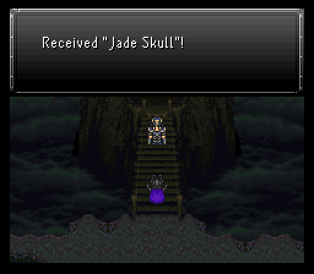
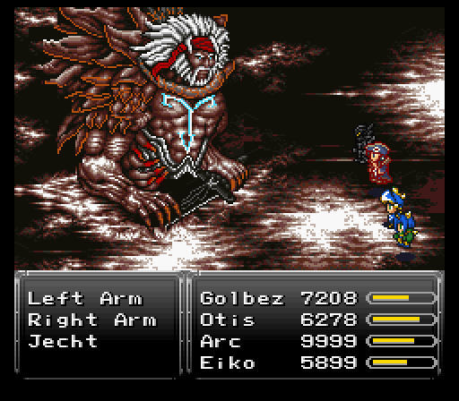
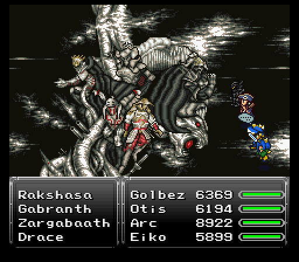
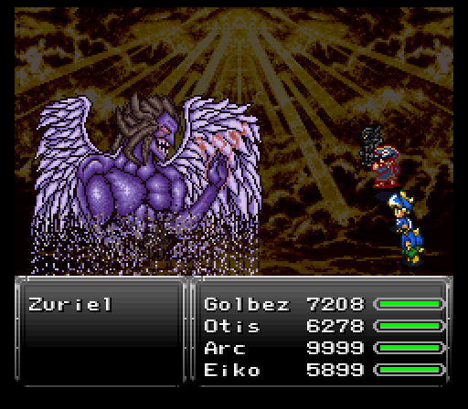

Part 30: Dream Shrine & The Final Battle
Dream Shrine:
Way back in Avalon's Soul, there was a Dream Stone that was picked up in the dream version of Mist Castle. Taking it to Angelo in Fraust will allow you to challenge the Dream Shrine.

The Dream Shrine is basically one massive sized boss rush. Not every single boss in the game is featured, but there's enough fights that you're going to be at it for a VERY long time. Taking at least 2 hours to get through it all might be under estimating the typical amount of time you'll need to full clear it. You only get one shot to full clear it too.
So, why even go through the trouble of attempting this? You'll be able to double up on boss drops & steals. Can be rather nice to get some very rare supplies for the last stretch of the game.
As for equip loadouts, you're going to want that Aeon Crystal relic from the Spellbound Castle equipped to someone. If you can manage to bet the Soul Booster successfully, you can potentially have a second Aeon Crystal to play with. Otherwise, make sure everyone has something equipped that can resist or otherwise nullify multiple elements. The Paladin & Omega Shields are great as are Prism Capes.
As for the team, obviously I had to bring my two buddies Golbez & Otis. Golbez can dish out impressive physical or magical damage and has access to Arise if emergencies arise. Otis can hit 2-3 times with his Jump command thanks to the Dragon Horn and is quite bulky, especially with a Dragon Soul equipped. The final two slots are taken up by Eiko (resists/nullifies a TON of elements with a Starry Hood & Shaman Dress, acts as the main support via the Zohar Shard relic) and Serin (Has all the important white magic spells like Curaga & Arise, helps with quickly clearing out the early sections of the boss rush).
Be prepared to cast Osmose a lot and use up many Elixirs, X-Potions and X-Ethers.

This first part of the gigantic boss rush covers bosses from the WoB. Maybe one or two minor annoyances, but this just serves as the warm up before some of the more dangerous and annoying fights crop up. Can't complain about a second copy of Flame Eagle's Eaglehorn relic though.
Part 2 of the Dream Shrine features just about every non optional boss in the WoR pre-Zuriel's Keep. It's no cakewalk since some of the fights have gimmicks that take a bit of time to deal with or have a decent chunk of health to blast through.
Third leg of this boss rush is another long one, but with quite a few less bosses. That's because the bosses in this segment are of all the optional dragons (and Doomkaiser I suppose too to kick things off).
Not much to mention here aside from a few things. First, Golbez replaces one of his Zodiac Swords with a shield since the optional dragons have some pretty potent and frequent physical strikes for the most part. There's also a time skip after Nidhogg since I took a small break to get up from my chair and stretch before continuing.
Finally...Abraxas actually going amazingly well despite Embolism hitting a couple of my characters.
Only two fights left in this marathon...and the first one is NOT Shenron as you'd probably guess based on my old segment. So, who takes Shenron's spot? Majin Buu from Zuriel's Lair. Not the worst fight...unless he feels like busting out Ultima as seen here. Considering most high end defense-ignoring nukes have peaked at 3.5-4k damage, Buu's almost 5k from Ultima was a surprise and nearly resulted in a run ender.
Also, as I learned, apparently being poisoned and going to 0 hp while in the air means you are not coming back down to earth...or at least take way longer than usual.

The final fight though is the one I was concerned about, Vegnagun. That transition into the third phase is even more of a potential run ender if you're not prepared. Somehow though, my plan this time worked which was to have Otis summon Ark just before heading into the 3rd phase and hope one of the first couple of people to land trigger the 3rd phase, letting me take a full health or nearly full health character into it. Despite being zombified, my man Golbez went on a beautiful rampage with his landing proc'ing a Flare, triggering the 3rd phase transition, then whacking the beast twice more with another Flare proc for good measure.
Once Vegnagun falls (and getting another Omega Shield in the process!), you'll get a bunch of rewards, all of them quite good. You get five each of every tab (might, speed, stamina, magic), one Golden Apple & Soma Drop, and the Jade Skull relic which makes you get no random encounters at all compared to the Talisman's halving of encounters.
Now that that massive endeavor is over, let's head back to Zuriel's Lair to finish what we started!
Zuriel's Guardians:
Not much left to the game aside from the three guardians standing between the crew and Zuriel's throne. If you can beat Vegnagun, then none of these fights should pose much threat, if any.
First up to fight is Final Fantasy 3's Cloud of Darkness/Dark Cloud. Her expertise is ailments with moves like Lullaby and Particle Beam. The latter is her single target physical strike which can inflict petrify. She's not afraid to use it multiple times in a turn too so you'll want to bring petrification protection for the whole team.
After her one and only extra life gets vaporized, she'll hit someone with Charm. Nuke whomever gets hit by it as quickly as possible to break her control, then revive them.
All things considered, Dark Cloud's probably one of the easier of the three guardians to deal with. She drops a Goddess Ring upon her defeat.

Next up is Exdeath, Final Fantasy V's main villain. That's fine and all...until you realize he's going up against my main A-team alongside Reaper. Not much hope for him sadly, heh.
Golbez is dual wielding swords as per usual, but now he's got a solid relic to boost up his bulk in the form of the Lavos Shard. Coming from betting the Jade Skull, it provides a 25% boost to hp & mp, a 7 point boost to might/magic/stamina/speed, 10 to evasion/magic evade, and 16 magic defense. Even dual wielding, Golbez has a pretty solid 170 def/189 magic def spread. Coupled with a 9.1k hp pool, he's not gonna be easy to topple.
Also of note here is Reaper spending a couple turns trying to get Mighty Guard from using Yoalk before deciding to completely deny Exdeath's elemental attacks by invoking his ultimate defensive soul Omnigear. This enemy found in the Tyrano Tower can let Reaper cast Magitek Barrier on a character. Reflect can be annoying, but Eiko with Sylph equipped can cover for healing until it wears off. More importantly though, using Omnigear grants Reaper absorption for every element in the game. Only non-elemental and physical attacks harm him while the soul's active.

Back to Exdeath...he's more offensive with a wide array of magical attacks. Most aren't going to amount to much, but he's got a nasty habit of using Gravity, then following up with a physical strike. If he hits someone that was struck by the spell, they're most likely dead.
As for his phase changes, he doesn't seem to do anything jaw dropping...but he does grant himself the image status. Either your physical attackers will have to spend a couple turns knocking that off or you can opt to cast Dispel.
Exdeath's only other really dangerous moves are Reverse Polarity and his physical skill Neo Almagest. Shouldn't kill anyone that's on the frontlines as long as they have around 5k-5.5k hp max with 190 or more defense and a casting of Protect placed on them.
Exdeath's drop is the strongest katana Avalon can pair with his Onimusha, the Zanmato. Basically a much stronger Uchigatana.


Finally, there's Final Fantasy 7's venerable Sephiroth. It only made sense that Cloud & Tifa get to come to this fight. Joining them are Shadow and Sephiroth's worst nightmare, Arc.
First off...while most of the rest of my team got grinded to 67-69, Cloud got taken up to lv70. That's where his final Limit, Omnislash V5, is unlocked. When it says it's an insanely powerful 4-hit combo, it means it. Cloud can easily dish out 30-40k without needing to dual wield, allowing him to sit on the frontline with a shield for some solid defenses.
Sephiroth leans on his magical attacks for the bulk of his damage like Exdeath. Unfortunately those magical attacks can be Runic'd by Arc and even Shadow if he mimics right after Arc sets up Runic.
Still, Sephiroth has a couple high end spells you don't want to see go off. Besides Meltdown which Arc denied him to do anything with, I believe he's got Shadow Flare. Unlike with every other boss that had either Ultima or Shadow Flare, Sephiroth can break this out whenever he feels like it with no telltale sign beforehand so you want to keep your hp around the 5k zone at all times.
Once Sephiroth runs out of all his extra lives and hp, he throws out one parting Meteor before accepting his defeat. Just have at least 3k hp on a character to survive it. Sephiroth drops a Lavos Shard on his defeat.
Zuriel's final speech:
Everyone finally stands on the switches at the ends of their routes. That gives them a warp right to Zuriel's throne where he gives a long winded typical final boss speech. Nevermind the fact he could have likely nuked everything in the time it took everyone to get here.


In any case, the final battle is massive enough that you get to select the order in which your 12 party members (or less!) get to fight. We'll see what that all means when the final battle commences.
Final battle:
Everyone's suited up to throw down with Zuriel once and for all. To get to him though, there's a tower of bosses from various Final Fantasy games to blast through.
First up is FFX's Jecht seen in his final aeon form. Out of three tiers here, he's the most dangerous with multiple turns and damage that's not to be underestimated. He also borrowed Dark Cloud's Particle Beam for himself and renamed it to Jecht Beam. He's not afraid to use it twice in a row either so petrification immunity on at least two party members is highly advised.
Oh, and his hands can randomly grab people to disable them.
Once two of the parts fall, I get everyone buffed up. Not really necessary, but I had no idea how the next two tiers were gonna go.
As the team heads to the second tier, keep in mind that any KO'd party members get replaced by the next character on your list. I wasn't planning on anyone in my A-team being KO'd, but I had Aurora & Serin as my main backup should Eiko fall at a bad time.
For the second tier, there's no less than six targets - the Archadian Judges from FFXII. If the targets had damage anywhere near Jecht's, this would be a fair bit more concerning for losing someone at a bad time. Sadly that is not the case as all of them do pretty bad damage. They also get nuked quickly by repeated Ultima castings (and a random Meteo thrown in for shenanigans too).

The third tier is none other than FFVIII's Seifer & Edea. Nothing real threatening here either, Edea takes the healing and buffing role, while Seifer does the damage. Just make sure everyone's alive before ending this tier.

Zuriel takes his sweet ass time floating down to challenge the party, but he means business right off the bat when he opens with Heartless Angel on the party. That alone means you have to be very careful with how hard you want to push your offense. This at a bad time could spell a wipe if everyone's committed to an attack, hence why Arc & Eiko for me are on standby this entire fight, maybe tossing out the odd Flare on Eiko's end if I feel like it.
Zuriel seemed to go for a lot of physical strikes during the early parts of the fight, like his befittingly powerful special attack, Trinity Breaker. Too bad Golbez summoning Fenrir put a real damper on that plan. Zuriel will counter attack with Energy Blade or Dispel, or sometimes both, and after a while he'll cast White Wind and Reflect on himself, and sometimes Big Guard, but considering the amount of damage I'm doing it won't help much.
Once Zuriel decides that pain comes before darkness and does a powerup flash, he becomes immune to all damage for a bit, something I didn't notice right away. Once he glows red and does Dark Force + Dark Matter, he laughs, signifying you can go back on the offensive. Zuriel's weakness is the holy element, so use any and all holy attacks for extra damage.
Zuriel finally gets the lead out and starts unleashing some rather painful attacks once his little damage immunity moment is over with. Remember when Sephiroth summoned Terrato? Zuriel does the same, but with Hades here. Damage is low, but Hades can inflict a random ailment on everyone. Too bad Otis was in the air and Arc & Eiko had Aeon Crystals equipped. Golbez? Well, Black Cauldron hit him with berserk. Sir, you just signed your own death warrant. Granted Golbez was doing max damage beforehand, but that's besides the point.
Developer's note: Besides Hades, Zuriel could have also summoned either Doomtrain or Anima.
Aside from various poison and status-inflicting spells, Zuriel's painful attacks include Ninth Dimension, and moves like Flare & Hyper Drive, both of which can easily break 3500 damage or more on the target hit. He still has Heartless Angel and can even chain it into Anti-magic Field to rip off your buffs. And although it didn't happen to me because I was insanely powerful, he can get to casting stronger spells such as Flare Star, Shadow Flare and Ultima, and even counter Ultima with Ultima. At the end of his normal attack pattern is Mind Blast.
Sadly for Zuriel, that Heartless Angel & Anti-magic Field combo got met with almost 50k damage between Golbez & Otis, bringing him down once and for all. No doubt this battle would have been much tougher if I wasn't so absurdly strong!
The End:
Zuriel's dead, magic's going kaput from the world, and everyone has to hoof it out on foot from the now collapsing keep. Everyone except Golbez that is. After he helps clear a path, he teleports out. As if he didn't put in enough X shenanigans this playthrough already, heh.
With that, another run of this fine hack comes to an end. Insane difficulty definitely started out vicious with a brutal early game that didn't start letting up a bit until after the scenario split. The WoR had it's own share of nasty moments, but nothing like the early game. Reminded me a bunch of the Trails in the Sky trilogy where each game's early game was nasty on their hardest difficulty setting, Nightmare (ESPECIALLY the second game), then eased up as more options became available.
Until next time!